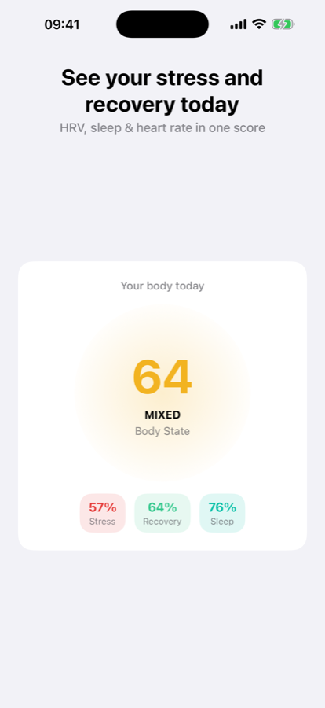
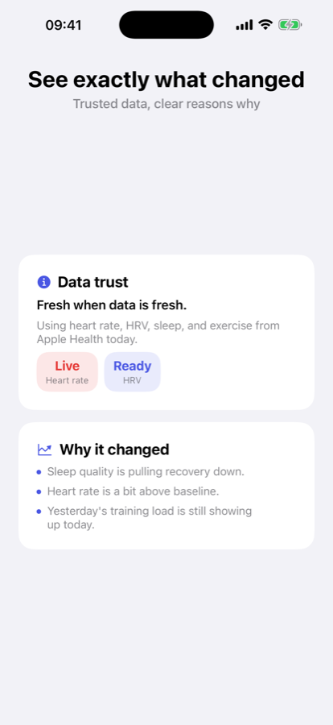
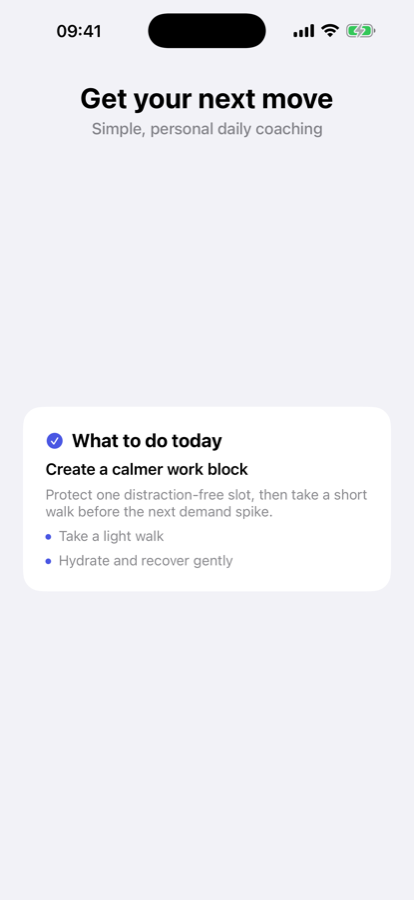

State
How is my body today?
One Body State score, measured against your own recent baseline rather than a population average.

Stressi reads the heart rate variability, sleep, resting heart rate and training load your watch already records, and turns them into one Body State score — with the reason it moved and a plan for the day.
Free to start · No account · Nothing leaves your phone
Why Sleep quality is pulling recovery down, and yesterday's training load is still showing up today.
Sample reading. On your phone these are your own figures, from Apple Health or Health Connect.
Most health apps hand you six graphs and leave you to work it out. Stressi answers the questions you actually wake up with, in the order you ask them.
One Body State score, measured against your own recent baseline rather than a population average.

Stressi names the signals that moved — sleep debt, a drop in HRV, a hard session yesterday — and shows how fresh the data behind them is.

A short Today Plan with specific steps for the day you are actually having, not generic advice to get more rest.

Stressi works from what your phone and watch already collect — Apple Health on iPhone, Health Connect on Android, including Pixel Watch, Galaxy Watch and other Wear OS devices. No extra hardware, no new straps.
The clearest read on how much load your nervous system is carrying, tracked against your own range instead of a textbook number.
Sleep duration and quality, overnight heart rate, and how much you actually recovered.
Slow shifts that show up days before you feel them, including the days worth backing off.
Recent training and movement, weighed against what your body has left to give.
Overnight signals compared only with your own typical range. Each one is optional and each works on its own — decline any of them and the rest keep going.
Seven-day trends are free. Thirty, ninety and 365-day trends, patterns, triggers and journal correlations come with Pro.
Every signal is scored against your own rolling baseline. A 41 ms HRV is not good or bad in the abstract — it matters because it is below where you usually sit.
Take a heart rate and HRV reading with the phone camera, and Stressi writes it back to Apple Health or Health Connect.
Health data coverage varies by watch and phone. Stressi shows when it last synced, which signals are contributing today, and when a score is running on partial data — instead of pretending to be more precise than it is.
Stressi is built for people who want a real physiological read without handing their health history to anyone — including me.
When the app crashes, a diagnostic report goes to Firebase Crashlytics so the bug can be fixed — code location, device model, OS and app version, never health data. And if you subscribe, RevenueCat sees an anonymous subscription status. That is the entire list.
Prices shown in USD and vary by country. The free trial is on the annual plan. Subscriptions renew automatically until cancelled, and you can cancel any time from your App Store or Google Play subscription settings.
A wearable that records HRV and sleep gives the sharpest read — an Apple Watch on iOS, or any Health Connect compatible wearable on Android. Stressi also works with phone-only data and a camera-based heart rate check, with a less precise score.
A single daily number built from your recovery, stress load, sleep quality, heart rate variability, resting heart rate and recent activity — compared against your own recent baseline, not a population average. The more consistently you wear your watch, the sharper it gets.
No. There is no sign-up and no cloud sync. Stressi reads from Apple Health or Health Connect and keeps every reading on your device.
iPhone on iOS 16 or later, and Android 14 or later with Health Connect.
No. Stressi is a wellness app. It does not diagnose, treat or prevent any condition, and it is not a substitute for advice from a qualified clinician.
Free to start, and it works with the watch you already own.
English, Spanish, German, French, Italian, Portuguese, Japanese, Korean and Chinese.